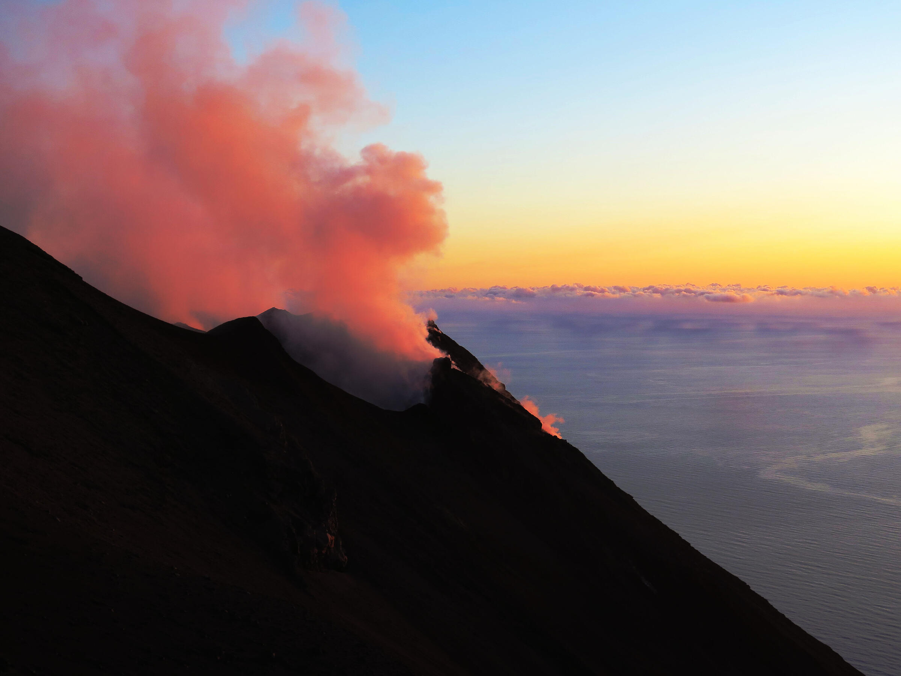
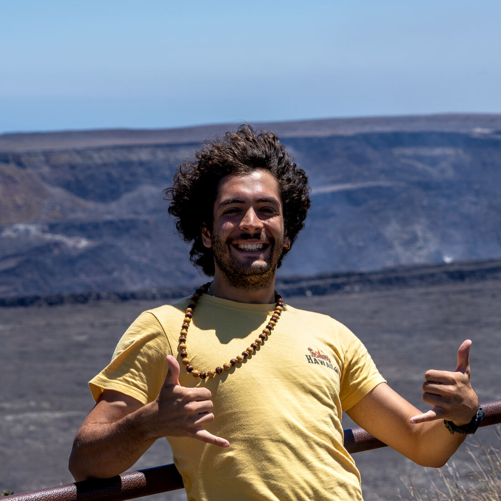
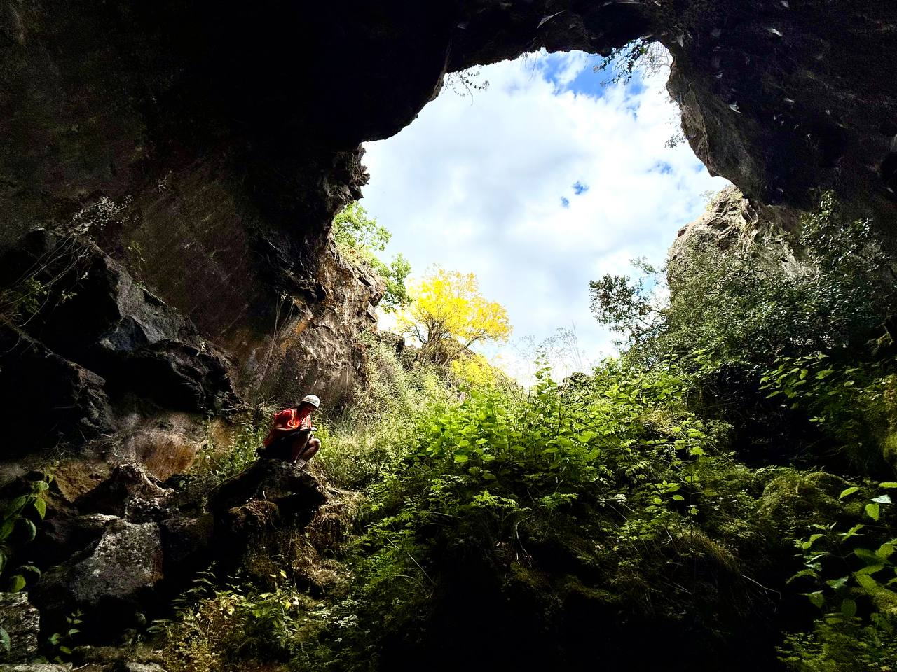
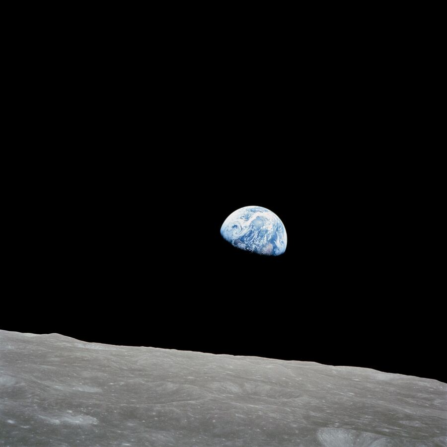
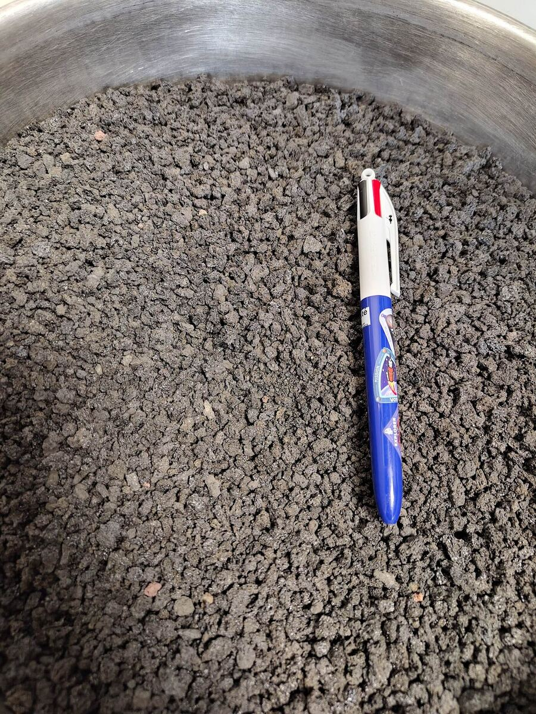

Fra la via Emilia e la Luna
A personal farewell to Francesco Guccini (1940–2026): a first concert at fourteen, an essay that earned a 3/10, three cities, lunar regolith, and a contract about to expire. Written in Italian.
Read more
Geologist · Applied Mineralogy · CISAS, University of Padova
Geologist with a passion for applied mineralogy, biomineralization and building materials (from cultural heritage preservation to modern construction innovations and future space applications). Currently Research Fellow at CISAS, University of Padova.


Born in 1994, I realized at 16 that I wanted to devote myself to studying rather than my two other youthful passions: karate and saxophone. Considered myself a "complete time waster" until 21, then I decided to apply my talent for geology in the direction of mineralogy.
My journey includes a Marie Curie doctorate at the University of Granada (SUBLime project), where I focused on self-cleaning lime-based materials through biomimetic approaches, studying amorphous-crystalline transitions and surface modifications. Now I'm a Postdoctoral Research Fellow at CISAS, working within the "Space It Up" project funded by ASI and MUR, characterizing terrestrial analogues and lunar regolith simulants for extraterrestrial construction.
I live in Padova, stubbornly following bizarre ideas such as reviving the cult of calcite and its pillars, and pushing to understand other planets because one is not enough. A devoted Inter Milano supporter. Convinced that pasta was the greatest leap in human progress until the Internet. My neighbors wish I didn't play vinyls with peculiar tastes.
A personal farewell to Francesco Guccini (1940–2026): a first concert at fourteen, an essay that earned a 3/10, three cities, lunar regolith, and a contract about to expire. Written in Italian.
Read moreLatest updates from research, conferences, and life.

What does it mean to photograph the Earth from the Moon's distance? A reflection on Artemis II's images as humanity's new self-portrait.
Read more
New paper in Materials Today Advances, because if you want to build on the Moon, you might as well start with a volcano.
Read moreDig deeper into research, publications, and everything else.